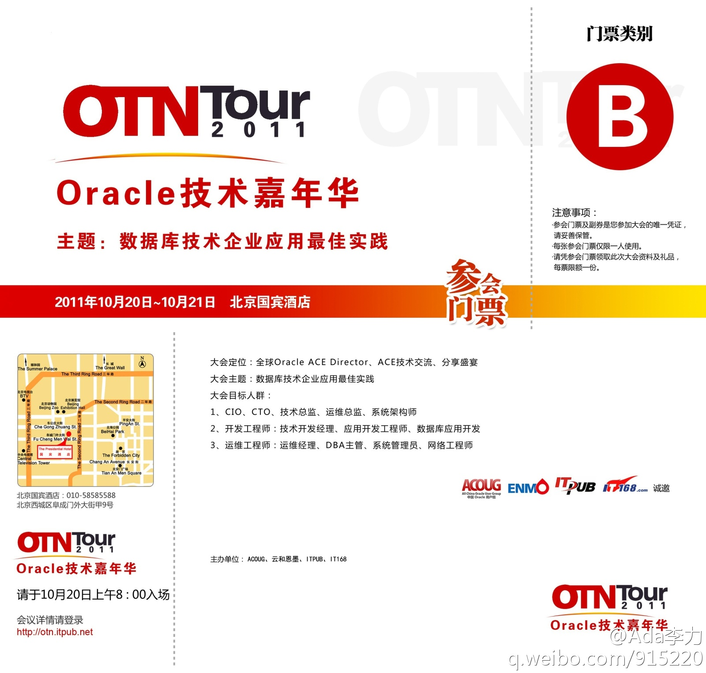
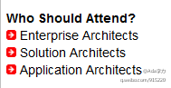

提醒注意交通安全的告示有很多让人印象深刻的, 例如“请司机注意您的方向盘——本城一无医生，二无医院，三无药品。”. 公司大楼禁烟, 以严厉口吻训斥, 不如换个幽默些的说法:"吸烟者请注意, 此地有偷拍, 直接连微博".
去当地看看是个不错的渠道. 同事中有印度人, 很看不上, 但这些人在公司又相当吃得开, 在硅谷以及大公司, 印度人相比华人, 很多方面占优势. 我觉得自己可能有偏见, 国内这方面的资料偏见也蛮多的, 想多找些较客观地资料了解和学习下.@Ada李力:最近对印度有了兴趣, 想找本比较好的书或者资料了解一下印度, 印度的宗教, 印度的文化, 印度人的思维方式, 现代印度社会状况. 大家有没有好的推荐?
有调查显示印度人幸福感和自我认同感挺高的. //@ztyan: 我去过印度两次，总的感觉，印度很自由，贫富差距大，但是因为自由，另外种姓制度造成的了人们认命。中国的现状是没有信仰，于是无畏，也就更容易产生不平衡。@Ada李力:最近对印度有了兴趣, 想找本比较好的书或者资料了解一下印度, 印度的宗教, 印度的文化, 印度人的思维方式, 现代印度社会状况. 大家有没有好的推荐?
//@Julia_jieliu: 本来一直觉得印度挺神秘，但在天涯上看了个强帖，实拍印度的神河恒河流域的照片，遂放弃任何对印度的幻想--在黑沉沉河流上漂过的人和牛的鼓胀的遗体旁边，妇人和小孩安然在河边梳洗沐浴。印度人和华人的心理承受能力差的真不是一星半点儿。这贴也令我对人类大同产生了巨大怀疑@Ada李力:最近对印度有了兴趣, 想找本比较好的书或者资料了解一下印度, 印度的宗教, 印度的文化, 印度人的思维方式, 现代印度社会状况. 大家有没有好的推荐?
//@SLC_李伟:为了评审一个系统架构去过孟买，工作中和印度同事有合作。仅供参考：1.印度同事语言有优势，但专业上不如西方同事；3.印度饮食对中国人来说有些奇怪，那是因为不习惯的原因；4.印度城市的样子，有我们习惯的地方，也有我们不习惯的地方；5. 印度大众很腼腆，像东方人。不能先入为主@Ada李力:最近对印度有了兴趣, 想找本比较好的书或者资料了解一下印度, 印度的宗教, 印度的文化, 印度人的思维方式, 现代印度社会状况. 大家有没有好的推荐?
这两个亚洲最大的国家, 互相不了解对方, 似乎也没有兴趣了解. //@闲妻梁母:我们对印度的了解还是太少，个人认为真正如实描写印度的书在中国还没有。@Ada李力:最近对印度有了兴趣, 想找本比较好的书或者资料了解一下印度, 印度的宗教, 印度的文化, 印度人的思维方式, 现代印度社会状况. 大家有没有好的推荐?
这种情况太太常见了. //@自由的EmmaY:之前的老板领导我们中国和印度的团队，我们肯干效率高，但老板说沟通少（其实就是report少）；印度的没成绩效率低，但老板很受用。@Ada李力:最近对印度有了兴趣, 想找本比较好的书或者资料了解一下印度, 印度的宗教, 印度的文化, 印度人的思维方式, 现代印度社会状况. 大家有没有好的推荐?
帮转//@SLC_李伟 计划在北京举办“系统架构评审”的培训，系统架构评审在西方已经是一个很成熟的技术。聚焦两个方面：1。架构评审的方法及技术；2。架构评审的实例训练。试想，没有这样的培训，你能做得了高铁，这样大型复杂系统的架构评审？说明：收费培训；要求参加者为高级设计人员；人数不超过15
转//@紫羊子: 最优秀的印度人, 一生的目标就是努力学习,离开他们的国家. 当然你可以说, 中国人也是这样. 但是出国的中国人很多都愿意回到中国,有的还成了中国的首富. 我们很少看到印度人最后会回去建设他们自己的家园. 这是中国和印度最大的不同. 印度仍然像一个殖民地, 最优秀的东西全送去欧美.@Ada李力:最近对印度有了兴趣, 想找本比较好的书或者资料了解一下印度, 印度的宗教, 印度的文化, 印度人的思维方式, 现代印度社会状况. 大家有没有好的推荐?
恭喜"架构师"微群里的@wolfg1969 朋友得到 2011 Oracle技术嘉年华的门票. 这次会议, 讲师来自数十位国内外Oracle ACE Director,ACE，在两天时间内分享交流Oracle DB，MySQL，Java, 中间件等方面的技术知识。网页链接 
之前在一家公司参加过一天的英文写作培训, 效果非常好, 当时很奇怪报名的同事不多. 后来聊起来才知道, 同事们很遗憾错过培训, 但没报名的原因有三: 1. 感觉课程紧俏,索性不去争取; 2. 认为这个培训需要老板指派, 还等着老板再发邮件呢; 3.不知道公司还有英语培训这回事儿.
//@紫羊子: 不好意思啊, 一讲起印度话匣子就开了. 当时我们总结的在印度三大冒险: 1. 喝水, 2. 过马路 3. 打"Taxi"(是蹦蹦车). 我最后去机场的时候, 看到一辆"taxi"直接翻掉, 里面出来, 一个人, 两个人, 三个...四个,五个, 还有无数的行李. 大家拍拍屁股又上路了. (小蹦蹦的标配是2个人哦!!!)@Ada李力:最近对印度有了兴趣, 想找本比较好的书或者资料了解一下印度, 印度的宗教, 印度的文化, 印度人的思维方式, 现代印度社会状况. 大家有没有好的推荐?
那么多人, Developer Program 怎么没在印度开搞, 而是大中国区打头阵? //@sysu_kululu: 公司印度的有3w多人，加上總部的應該有4w~佔公司一半人數，除了SVP外，任何一個職位上都有印度的。偶在peoplesoft上8掛過。@Ada李力:最近对印度有了兴趣, 想找本比较好的书或者资料了解一下印度, 印度的宗教, 印度的文化, 印度人的思维方式, 现代印度社会状况. 大家有没有好的推荐?
我们的领导说，去了一趟印度，感觉比几十堂爱国主义课都有效果。via @闲妻梁母 //@Julia_jieliu: “也许，只有在最恶劣的物质环境和最原始的生活中，才能够找到最深层的精神启发。” URL:网页链接 或网页链接 心理承受能力差的万万万万万万勿入--绝非戏言。//@姜太文: 求URL@Ada李力:最近对印度有了兴趣, 想找本比较好的书或者资料了解一下印度, 印度的宗教, 印度的文化, 印度人的思维方式, 现代印度社会状况. 大家有没有好的推荐?
你分析得对. //@fanngyuan:按字母顺序排列的把@Ada李力:OTN(Oracle Technology Network)上软件下载, 排第一位的竟然是Berkley DB, 网页链接 怎么回事? @BrokenWindows
有个“OTN Architect Day”的活动，网页链接 参会者条件列的是：Enterprise Architects, Solution Architects, Application Architects. 老实说，这三者的定义和区别，我得花些时间去了解。国内架构师群体，可能还没到划分子类的程度。 
非常感谢大家推荐的关于印度的书和电影: 妹尾河童-《窥视印度》, 《薄伽梵歌》. 《三个傻瓜》, 《贫民窟的百万富翁》, 《不顾诸神》 《生活大爆炸》 《甘地传》 《Outsourced》 @紫羊子 @LEI-SUN @南山Way @高飞 @KDS-黑暗浪子 @汪洋Cynthia @陈加兴 @团团的晨曦@Ada李力:最近对印度有了兴趣, 想找本比较好的书或者资料了解一下印度, 印度的宗教, 印度的文化, 印度人的思维方式, 现代印度社会状况. 大家有没有好的推荐?
刚看完了<遇见未知的自己>，书很容易读，故事性很强，一会儿就能看完，可能故事设计得也非常符合我这个年龄女性的状况．但以一个理科生角度来看这本书，虽然是以通俗易懂方式谈的哲学问题，但叙述角度有些江湖术士的感觉，畅销书都有这个特点吧．
Nod. //@WeMarketing: 其实现在国内早对这类新闻不感冒了，看这个帖子下面的评论就能看出来。出去买趟东西，看到物价都在飞涨，二环上车完全堵死，小区里经济状况不好的大妈还在垃圾箱里捡塑料瓶子。回家看到这条新闻，我感觉如果你觉得特自豪，那才是真有病了。@头条新闻:【外媒称天宫一号是中国变世界强国标志】环球网报道，有评论称，天宫一号将是中国崛起成为一个世界强国的一个重要的标志性元素，还有分析担忧，全球目前的太空力量平衡将被中国打破。不过，正如美国海军分析中心中国研究项目主任冯德威所说，天宫一号将为世界带来更多的公益性。网页链接